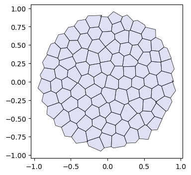
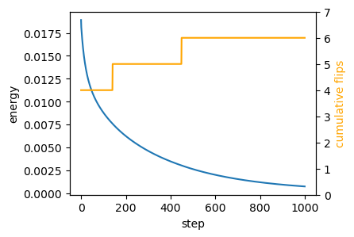
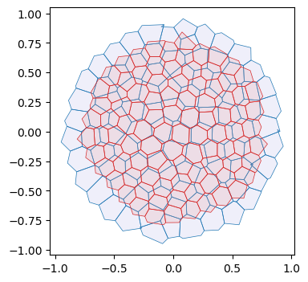
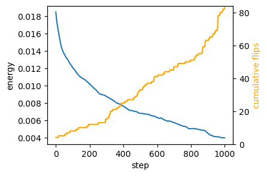
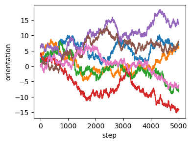
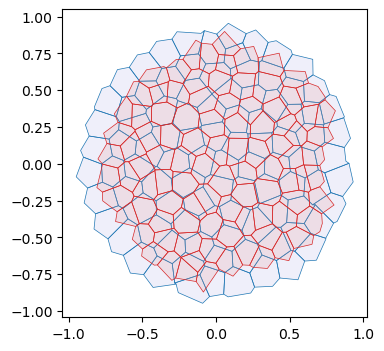
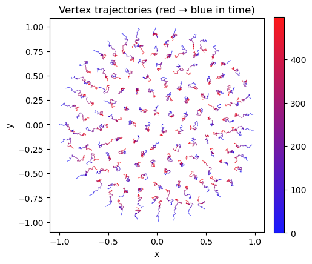
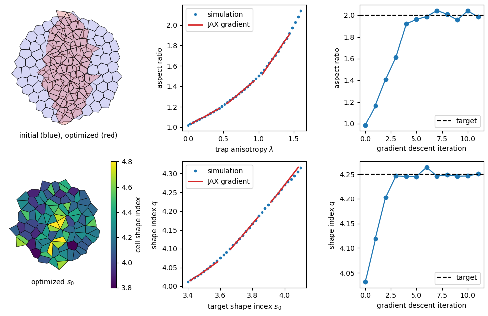

from typing import Tuple
import dataclasses
import copy
import numpy as np
import matplotlib.pyplot as plt
import matplotlib as mpl
import jax
import jax.numpy as jnp
import diffrax
import lineax
from jaxtyping import Float, Bool, Int
from enum import IntEnum
import functoolsTutorial: Self-propelled Voronoi model
After the toy example of notebook 05, let’s implement a slightly more complicated model, the self-propelled Voronoi area-perimeter Voronoi (SVP) model of Bi et al., 2016. This 2D model comprises most of the ingredients we will see in more general tissue mechanics simulations, from a coding perspective.
In brief, in the SVP, cells are modeled as the Voronoi tesselation for a series of centroids \(\mathbf{v}_i\) (our triangulation vertices). Their overdamped dynamics comprises two terms: self-propulsion and relaxation of an elastic energy: \[\partial_t \mathbf{v}_i = -\nabla_{\mathbf{v}_i} E_{AP} + v_0 \hat{\mathbf{n}}_i\] For each cell \(i\), \(\hat{\mathbf{n}}_i\) is a unit vector (so we will represent it by an angle \(\theta_i\)) that determines the direction of motion. Units of time are chosen so that the coefficient of \(\nabla E_{AP}\) is \(1\). The energy is defined in terms of the Voronoi area \(a_i\) and Voronoi perimeter \(p_i\) of each cell: \[E_{AP} = \sum_i k_a(a_i-a_0)^2 + k_p(p_i-p_0)^2 \] where \(k_a, k_p\) are elastic constants, and \(a_0, p_0\) are the target area and perimeter. They define the “shape index” \(s_0= p_0/\sqrt{a_0}\). The key physics is that above a critical shape index \(s_0^*\), the model has a degenerate set of ground states, since for a large \(p_0\), there are many polygons with the given target area and perimeter (think floppy balloon).
The orientation \(\theta_i\) of each cell is also dynamic. It undergoes rotational diffusion: \[d\theta_i = D_\theta dW_{t, i} \] where \(dW_{t,i}\) is Brownian motion, independent for each cell \(i\), and \(D_\theta\) is the diffusion constant.
Numerics
The cell array connectivity will be represented by a HeMesh (see notebook 01). The geometry is fully described by the triangulation vertex positions, the Voronoi cell centroids. We also need a scalar vertex attribute for the angle \(\theta_i\). To calculate the energy \(E_{AP}\), we obtain Voronoi area and perimeter using the linops module. Boundary cells can be handled by “mirroring”, i.e., all corners count twice when computing the area/perimeter. Given the energy, JAX autodiff gives us the gradients. To time-evolve the mesh geometry, we can use diffrax, like in notebook 05. diffrax can also deal with SDEs, like the Langevin equation for cell angles.
Note This notebook is an example, and not meant to be numerically efficient!
jax.config.update("jax_enable_x64", True)
jax.config.update("jax_debug_nans", True)
jax.config.update("jax_log_compiles", False)
jax.config.update("jax_disable_jit", False)from triangulax import trigonometry as trig
from triangulax.triangular import TriMesh
from triangulax import mesh as msh
from triangulax.mesh import HeMesh, GeomMesh
from triangulax.topology import flip_by_id
from triangulax import adjacency as adj
from triangulax import geometry as geomfrom importlib import reload
#reload(msh)
#reload(trig)Read in test data
mesh = TriMesh.read_obj("tutorial_meshes/disk.obj", dim=2) # try disk_fine for an example with 10x more cells
hemesh = HeMesh.from_triangles(mesh.vertices.shape[0], mesh.faces)
geommesh = GeomMesh(vertices=mesh.vertices)
geommesh = geom.set_voronoi_face_positions(geommesh, hemesh)
hemesh, geommeshWarning: readOBJ() ignored non-comment line 3:
o flat_tri_ecmc(HeMesh(N_V=131, N_HE=708, N_F=224), GeomMesh(D=2, N_V=131, N_HE=N/A, N_F=224))fig, ax = plt.subplots(figsize=(4, 4))
ax.add_collection(msh.cellplot(hemesh, geommesh.face_positions,
cell_colors=np.array([0.7, 0.7, 0.9, 0.4]),
mpl_polygon_kwargs={"lw": 0.5, "ec": "k"}))
ax.set_aspect("equal")
ax.autoscale_view();
A note on periodic boundary conditions
The mesh we just loaded is a disk, and thus has a boundary. You may instead want to do simulations with periodic boundary conditions, i.e. simulate cells in a box with lengths \(\mathbf{L} = [L_x, L_y]\) where opposite sides are identified. The tools for this are implemented in the periodic module.
In triangulax, mesh connectivity and geometry are decoupled, so periodic boundary conditions are easy to implement. You need two ingredients:
- A triangulation whose connectivity has the desired periodicity (e.g. a triangulation of a torus).
There are different ways to generate a triangulation of the torus - one example is included in test_meshes/torus_2d.obj. Note: doing edge flips/T1 on this mesh will preserve its topology, no further bookkeeping needed. In particular, one does not need to keep track of any boundary vertices. There is no boundary! All triangulax tools related to the mesh connectivity (like the HeMesh class) can be used without modification.
- A distance function that takes into account the periodicity.
For a rectangular domain with lengths \(\mathbf{L} = [L_x, L_y]\), the displacement vector between two points \(\mathbf{r}_1, \mathbf{r}_2\) can be computed like this:
def displacement_periodic(r_1, r_2, L):
d = r_2 – r_1
return d – L*jnp.round(d/L)This always gives the shortest displacement vector between the two points. With this distance function, you can compute edge lengths, angles, Voronoi duals, etc.
For a domain twisted/sheared along the \(x\)-axis by an amount \(s\) (i.e. a torus where \((x, y)\) and \((x + sL_x, y+L_y)\) are identified), the distance function becomes
def displacement_periodic_twisted(r_1, r_2, L, s):
d = r_2 – r_1
twist = s * L[0] * jnp.round(d[1] / L[1]) # compute the amount of twist
d = d.at[0].set(d[0] + twist)
return d – L*jnp.round(d/L)Note: nothing prevents you from changing the shape of your domain, i.e. \(\mathbf{L}, s\) dynamically during your simulation! You can even take gradients with respect to them.
# this is an example of a 2d mesh with "periodic boundary conditions" - topologically, it is just a torus.
# you can see the faces that wrap around the boundary.
import igl
vertices, _, _, faces, _, _ = igl.readOBJ("tutorial_meshes/torus_2d.obj")
plt.triplot(vertices[:,0], vertices[:,1], faces, lw=0.5, color="k")
plt.axis("equal")(np.float64(-0.028125350000000004),
np.float64(1.04895835),
np.float64(0.03749965),
np.float64(1.04583335))
igl.boundary_loop_all(faces) # the mesh has no boundary[]Voronoi geometry and area-perimeter energy
def get_voronoi_perimeters(vertices: Float[jax.Array, "n_vertices dim"], hemesh: msh.HeMesh) -> Float[jax.Array, " n_vertices"]:
"""Compute Voronoi perimeters for each vertex."""
voronoi_lengths = geom.get_voronoi_edge_lengths(vertices, hemesh)
cell_perims = adj.sum_he_to_vertex_incoming(hemesh, voronoi_lengths)
return cell_perims@jax.jit
def energy_ap(geommesh: GeomMesh, hemesh: HeMesh, a0: float, p0: float,
k_a: float = 1.0, k_p: float = 1.0, k_penalty: float = 1e4) -> Float[jax.Array, ""]:
"""Area-perimeter energy for Voronoi cells.
Adds a penalty for thin or inverted triangles (area < a0/8). It acts as a short-range repulsion
between cell centers and keeps a vertex from crossing an edge, which edge flips cannot undo.
`k_penalty` must be large enough that the penalty force can balance the self-propulsion.
"""
cell_areas = geom.get_voronoi_areas(geommesh.vertices, hemesh)
cell_perimeters = get_voronoi_perimeters(geommesh.vertices, hemesh)
tri_areas = geom.get_oriented_triangle_areas(geommesh.vertices, hemesh)
# add a factor 2x for boundary vertices to account for missing triangles
cell_areas = jnp.where(hemesh.is_bdry, 2.0 * cell_areas, cell_areas)
cell_perimeters = jnp.where(hemesh.is_bdry, 2.0 * cell_perimeters, cell_perimeters)
a_min = 0.25*(a0/2)
penality = jnp.where(tri_areas < a_min, k_a * (tri_areas-a_min)**2, 0.0).mean()
return k_a*jnp.mean((cell_areas-a0)**2) + k_p * jnp.mean((cell_perimeters-p0)**2) + k_penalty*penalitycell_areas, cell_perimeters = (geom.get_voronoi_areas(geommesh.vertices, hemesh),
get_voronoi_perimeters(geommesh.vertices, hemesh))
a_mean, p_mean = (cell_areas[~hemesh.is_bdry].mean(), cell_perimeters[~hemesh.is_bdry].mean())
a_mean, p_mean, p_mean/np.sqrt(a_mean)(Array(0.02756258, dtype=float64),
Array(0.63463959, dtype=float64),
Array(3.82267399, dtype=float64))_ = jax.block_until_ready(energy_ap(geommesh, hemesh, a0=a_mean, p0=3*jnp.sqrt(a_mean)))66.5 μs ± 1.14 μs per loop (mean ± std. dev. of 7 runs, 10,000 loops each)grad_energy = jax.jit(jax.grad(energy_ap))_ = jax.block_until_ready(grad_energy(geommesh, hemesh, a0=a_mean, p0=3*jnp.sqrt(a_mean)))202 μs ± 38 μs per loop (mean ± std. dev. of 7 runs, 1 loop each)Edge flips
After each time step, we need to check if the Voronoi edge lengths are below some threshold (the edge lengths can be computed on the fly), and, if so, we need to carry out edge flips. In vertex models, one often wants to avoid “re-flipping” an edge, which can be done via a “cool down” period (an edge flipped at step \(t\) cannot be flipped again for the next few steps).
For the Voronoi model, the cooldown should be 0 (and l_min_T1 = 0). A negative Voronoi edge length is exactly the Delaunay criterion, and the energy is continuous across the flip, so re-flipping an edge is harmless. A cooldown, on the other hand, keeps non-Delaunay edges in the mesh. The triangles adjacent to such an edge can become arbitrarily thin, so their circumcenters (the Voronoi vertices) run off to infinity. The cooldown can be useful if you want to implement extra dynamics on cell edges after a T1.
@functools.partial(jax.jit, static_argnames=['cooldown_steps', 'max_flips'])
def apply_flips(geommesh: GeomMesh, hemesh: HeMesh, l_min_T1: float,
cooldown_counter: Int[jax.Array, " n_hes"], cooldown_steps: int, max_flips: int = 10
) -> Tuple[HeMesh, Int[jax.Array, " n_hes"], Bool[jax.Array, " n_hes"],]:
"""
Apply T1 edge flips with a per-edge cooldown.
Flipps edges if they are shorter than l_min_T1. Bondary edges are not flipped.
Only flips the max_flips shortest edges for efficiency.
"""
edge_lengths = geom.get_voronoi_edge_lengths(geommesh.vertices, hemesh)
allow_flip = (cooldown_counter == 0) & hemesh.is_unique & ~hemesh.is_bdry_edge
edge_lengths = jnp.where(allow_flip, edge_lengths, jnp.inf)
ids = jnp.argsort(edge_lengths)[:max_flips]
hemesh_next = flip_by_id(hemesh, ids, edge_lengths[ids] < l_min_T1)
did_flip = (edge_lengths < l_min_T1) & (edge_lengths < edge_lengths[ids[-1]])
cooldown_counter = jnp.where(did_flip, cooldown_steps, jnp.clip(cooldown_counter-1, 0))
return hemesh_next, cooldown_counter, did_fliphemesh_next, cooldown_counter, did_flip = apply_flips(geommesh, hemesh, l_min_T1=0.0,
cooldown_counter=0*jnp.ones(hemesh.n_hes),
cooldown_steps=1, max_flips=10)
did_flip.sum()Array(4, dtype=int64)_ = apply_flips(geommesh, hemesh, l_min_T1=0.0, cooldown_counter=jnp.zeros(hemesh.n_hes, dtype=jnp.int32),
cooldown_steps=5, max_flips=10)108 μs ± 10.6 μs per loop (mean ± std. dev. of 7 runs, 10,000 loops each)Energy relaxation (no self-propulsion)
We first only relax the area–perimeter energy. We also need to allow for topological modifications of the mesh (T1s/edge flips). At every timestep, we check if any dual cell edge has negative length and flip it. To ensure we don’t flip the same edge multiple times, let’s use a cooldown period.
# energy parameters
a0 = a_mean
s0 = 3
p0 = s0*jnp.sqrt(a0)
# numerical parameters
step_size = 0.02
n_steps = 10000
cooldown_steps = 0 # no cooldown for Voronoi models, see above
l_min_T1 = 0.0
cooldown_counter=0*jnp.ones(hemesh.n_hes)# relax energy
@jax.jit
def relax_energy_step(geommesh: GeomMesh, hemesh: HeMesh,
a0: float, p0: float,
step_size: float = 0.01,
k_a: float = 1.0, k_p: float = 1.0) -> Tuple[GeomMesh, Float[jax.Array, ""]]:
loss, grad = jax.value_and_grad(energy_ap)(geommesh, hemesh, a0, p0, k_a, k_p)
updated_vertices = geommesh.vertices - step_size * grad.vertices
geommesh_updated = dataclasses.replace(geommesh, vertices=updated_vertices)
return geommesh_updated, loss
# package simulation time step into a function for jax.lax.scan
@jax.jit
def scan_fun(carry: Tuple[GeomMesh, HeMesh, Int[jax.Array, " n_steps"]], x: Float[jax.Array, " n_steps"]):
(geommesh_relaxed, hemesh_relaxed), cooldown_counter = carry
# step energy
geommesh_relaxed, loss = relax_energy_step(geommesh_relaxed, hemesh_relaxed, a0, p0, step_size=step_size)
# carry out T1s
hemesh_relaxed, cooldown_counter, to_flip = apply_flips(geommesh_relaxed, hemesh_relaxed, l_min_T1,
cooldown_counter, cooldown_steps)
#to_flip = jnp.zeros(2)
# return updated carry and metrics
log = jnp.array([loss, to_flip.sum()])
return ((geommesh_relaxed, hemesh_relaxed), cooldown_counter), logcooldown_counter = jnp.zeros(hemesh.n_hes)
sim_steps = jnp.arange(n_steps)
init = ((geommesh, hemesh), cooldown_counter)
((geommesh_relaxed, hemesh_relaxed), _), logs = jax.lax.scan(scan_fun, init, sim_steps)
energy, flip_count = logs.Tfig = plt.figure(figsize=(4, 3))
plt.plot(energy[::int(n_steps/1000)])
plt.xlabel("step")
plt.ylabel("energy")
# add a twin y axis that shows the cummulative number of flips
ax2 = plt.gca().twinx()
ax2.plot(jnp.cumsum(flip_count)[::int(n_steps/1000)], color="orange")
ax2.set_ylabel("cumulative flips", color="orange")
ax2.set_ylim([0,flip_count.sum()+1])
geommesh_relaxed = geom.set_voronoi_face_positions(geommesh_relaxed, hemesh_relaxed)
fig, ax = plt.subplots(figsize=(4, 4))
ax.add_collection(msh.cellplot(hemesh, geommesh.face_positions,
cell_colors=np.array([0.7, 0.7, 0.9, 0.2]),
mpl_polygon_kwargs={"lw": 0.5, "ec": "tab:blue"}))
ax.add_collection(msh.cellplot(hemesh_relaxed, geommesh_relaxed.face_positions,
cell_colors=np.array([0.9, 0.6, 0.6, 0.2]),
mpl_polygon_kwargs={"lw": 0.5, "ec": "tab:red"}))
ax.set_aspect("equal")
ax.autoscale_view();
Overdamped dynamics with self-propulsion
Next, let’s add the self-propulsion term. We initialize the angles \(\theta_i\) at random. We can store the angles as an extra vertex_attrib in our geommesh, using the functionality of the GeomMesh dataclass. We already have an IntEnum which we can use as keys to the vertex_attrib dictionary, like described in notebook 01.
In addition to incorporating the self-propulusion term \(\partial_t \mathbf{v}_i = -\nabla_{\mathbf{v}_i} E_{AP} + v_0\hat{\mathbf{n}}_i\), we need to do (stochastic) time steps for the angle orientation. Let’s do that with diffrax’s SDE solver, like in this tutorial. Let’s also implement the “pattern” for simulation loops with jax.lax.scan.
Note that the simulation still diverge if the self-propulsion is too strong (here, for \(v_0 \gtrsim 0.05\)). In this case, self-propulsion can push one cell center across an edge of the triangulation (i.e., into a neighboring cell) within a single time step. This inverts a triangle, which breaks the simulation. The penalty term in energy_ap counteracts this up to a point.
Random numbers in JAX
JAX takes a different approach to random numbers (and hence the noise in our SDE) than numpy. The random numbers that will be used are specified by a key and will thus be reproducible across simulations. In particular, random numbers are no impediment to auto-differentiation; they are “frozen” when taking automatic derivatives.
## for this model, the simulation state becomes quite complex. Let's define a dataclass to hold it.
@jax.tree_util.register_dataclass
@dataclasses.dataclass
class SimState:
geommesh: GeomMesh
hemesh: HeMesh
cooldown_counter: Int[jax.Array, " n_hes"]
tprev: Float[jax.Array, ""]
solver_state_sp: object
solver_state_sde: object
## we also define a dataclass to hold logging information
@jax.tree_util.register_dataclass
@dataclasses.dataclass
class Log:
geommesh: GeomMesh
hemesh: HeMesh
energy: Float[jax.Array, ""]
n_flips: Int[jax.Array, ""]# initialize orientations and store as a vertex attribute
class VertexAttribs(IntEnum):
SP_ORIENTATION = 1
key = jax.random.key(0)
theta0 = jax.random.uniform(key, shape=(hemesh.n_vertices,), minval=0.0, maxval=2*jnp.pi)
geommesh_sp = dataclasses.replace(geommesh,
vertex_attribs={VertexAttribs.SP_ORIENTATION: theta0})
hemesh_sp = copy.copy(hemesh)## set simulation parameters
# energy parameters
a0 = a_mean
s0 = 3
p0 = s0*jnp.sqrt(a0)
v0 = 0.005 # self-propulsion speed
ka = 1.0
kp = 1.0
# orientation dynamics parameters
diffusion_coeff_theta = 1.0
# timestepping parameters
step_size = 0.02
n_steps = 5000
cooldown_steps = 0 # no cooldown for Voronoi models, see above
l_min_T1 = 0.0# check magnitude of the gradient forces vs the self-propulsion
grad0 = jax.grad(energy_ap)(geommesh_sp, hemesh, a0, p0, 1, 1).vertices
sp0 = v0*jnp.stack([jnp.cos(theta0), jnp.sin(theta0)], axis=-1)
jnp.linalg.norm(sp0, axis=-1).mean() / jnp.linalg.norm(grad0, axis=-1).mean()Array(1.5736791, dtype=float64)## define the ODE for vertex positions
@jax.jit
def ap_selfprop_vector_field(t: Float[jax.Array, ""],
y: GeomMesh,
args: Tuple[HeMesh, float, float, float, float, float]) -> GeomMesh:
"""RHS for overdamped area-perimeter dynamics with self-propulsion."""
hemesh, a0, p0, v0, k_a, k_p = args
theta = y.vertex_attribs[VertexAttribs.SP_ORIENTATION]
# combine energy gradient with self-propulsion
grad = jax.grad(energy_ap)(y, hemesh, a0, p0, k_a, k_p)
n_hat = jnp.stack([jnp.cos(theta), jnp.sin(theta)], axis=-1)
velocity = -grad.vertices + v0 * n_hat
# velocity = jnp.where(hemesh.is_bdry[:,None], 0, velocity)
# don't update the orientations here
zero_vertex_attribs = {key: jnp.zeros_like(val) for key, val in y.vertex_attribs.items()}
return dataclasses.replace(y, vertices=velocity, vertex_attribs=zero_vertex_attribs,)
term_sp = diffrax.ODETerm(ap_selfprop_vector_field)
## define the SDE and solver for orientation dynamics
key_sde = jax.random.key(0)
def diffusion(t, y, args):
return lineax.DiagonalLinearOperator(diffusion_coeff_theta*jnp.ones(hemesh_sp.n_vertices))
def drift(t, y, args):
return jnp.zeros(hemesh_sp.n_vertices)
brownian_motion = diffrax.VirtualBrownianTree(0, step_size*n_steps,
tol=1e-3, shape=(hemesh_sp.n_vertices,), key=key_sde)
term_sde = diffrax.MultiTerm(diffrax.ODETerm(drift), diffrax.ControlTerm(diffusion, brownian_motion))
## Define solvers
solver_sp = diffrax.Euler()
solver_sde = diffrax.EulerHeun()# initialize the ancillary variables (solver state, cooldown)
solver_state_sp = solver_sp.init(term_sp, 0, step_size, geommesh_sp, (hemesh_sp, a0, p0, v0, ka, kp))
solver_state_sde = solver_sde.init(term_sde, 0, step_size, geommesh_sp.vertex_attribs[VertexAttribs.SP_ORIENTATION], None)
timepoints = step_size * jnp.arange(n_steps)
init = SimState(geommesh=geommesh_sp, hemesh=hemesh_sp,
cooldown_counter= jnp.zeros(hemesh_sp.n_hes), tprev=timepoints[0],
solver_state_sp=solver_state_sp, solver_state_sde=solver_state_sde)# define the scan function - one step of the SDE + ODE coupled system
@jax.jit
def scan_fun(state: SimState, tnext: Float[jax.Array, ""],) -> tuple[SimState, Log]:
# time-step SDE for self-propulsion orientation
theta = state.geommesh.vertex_attribs[VertexAttribs.SP_ORIENTATION]
theta, _, _, solver_state_sde, _ = solver_sde.step(term_sde, state.tprev, tnext, theta,
None, state.solver_state_sde, made_jump=False)
# time-step ODE for vertex positions
args_sp = (state.hemesh, a0, p0, v0, ka, kp,)
geommesh, _, _, solver_state_sp, _ = solver_sp.step(term_sp, state.tprev, tnext, state.geommesh, args_sp,
state.solver_state_sp, made_jump=False,)
geommesh = dataclasses.replace(geommesh, vertex_attribs={VertexAttribs.SP_ORIENTATION: theta})
# T1 transitions for connectivity
hemesh, cooldown_counter, to_flip = apply_flips(geommesh, state.hemesh,l_min_T1,
state.cooldown_counter, cooldown_steps,)
# make measurements for log
energy = energy_ap(geommesh, hemesh, a0, p0, ka, kp)
n_flips=to_flip.sum()
log = Log(geommesh=geommesh, hemesh=hemesh,
energy=energy, n_flips=n_flips)
# package next state
next_state = SimState(geommesh=geommesh, hemesh=hemesh,
cooldown_counter=cooldown_counter, tprev=tnext,
solver_state_sp=solver_state_sp, solver_state_sde=solver_state_sde)
return next_state, logfinal_state, logs = jax.lax.scan(scan_fun, init, timepoints)Numerical efficiency
%%timeit shows that the simulation run above take about 1.7s. - The most expensive step is scanning for edge flips. One could accelerate the simulation by checking only every \(n\) steps. - One could likely use adaptive timestepping to greatly accelerate the simulation.
# Time stepping: scan advances (tprev -> tnext) for both theta and vertex dynamics.
final_state, logs = jax.lax.scan(scan_fun, init, timepoints)1.74 s ± 25.2 ms per loop (mean ± std. dev. of 7 runs, 1 loop each)Visualize trajectory
# Measurements logged at each step: geometry, connectivity, energy, and T1 flip counts.
geommesh_traj = msh.tree_unstack(logs.geommesh)
hemesh_traj = msh.tree_unstack(logs.hemesh)# total displacement - about 50% of a cell distance
mean_edge_len = geom.get_he_length(geommesh.vertices, hemesh).mean()
np.linalg.norm(geommesh_traj[0].vertices-geommesh_traj[-1].vertices, axis=-1).mean() / mean_edge_lenArray(0.54202478, dtype=float64)fig = plt.figure(figsize=(4, 3))
skip = int(np.ceil(n_steps/1000))
plt.plot(logs.energy[::skip])
plt.xlabel("step")
plt.ylabel("energy")
# add a twin y axis that shows the cummulative number of flips
ax2 = plt.gca().twinx()
ax2.plot(jnp.cumsum(logs.n_flips)[::skip], color="orange")
ax2.set_ylabel("cumulative flips", color="orange")
ax2.set_ylim([0,logs.n_flips.sum()+1])
# angle dynamics are stochastic
fig = plt.figure(figsize=(4, 3))
cell_id = 50
plt.plot(logs.geommesh.vertex_attribs[VertexAttribs.SP_ORIENTATION][:, ::20])
plt.xlabel("step")
plt.ylabel("orientation")Text(0, 0.5, 'orientation')
# plot initial and final mesh
fig, ax = plt.subplots(figsize=(4, 4))
geommesh_traj[-1] = geom.set_voronoi_face_positions(geommesh_traj[-1], hemesh_traj[-1])
ax.add_collection(msh.cellplot(hemesh_traj[0], geommesh_traj[0].face_positions,
cell_colors=np.array([0.7, 0.7, 0.9, 0.2]),
mpl_polygon_kwargs={"lw": 0.5, "ec": "tab:blue"}))
ax.add_collection(msh.cellplot(hemesh_traj[-1], geommesh_traj[-1].face_positions,
cell_colors=np.array([0.9, 0.6, 0.6, 0.2]),
mpl_polygon_kwargs={"lw": 0.5, "ec": "tab:red"}))
ax.set_aspect("equal")
ax.autoscale_view();
## plot trajectories of vertices (color = time: blue → red)
# logs.geommesh.vertices: (n_steps, n_vertices, 2), downsample in time
stride = 10
X = np.asarray(logs.geommesh.vertices)[::stride]
T = X.shape[0]
# Build line segments connecting consecutive time points for each vertex.
segments = np.stack([X[:-1], X[1:]], axis=2).reshape(-1, 2, 2)
t_idx = np.repeat(np.arange(T - 1), hemesh.n_vertices)
cmap = mpl.colors.LinearSegmentedColormap.from_list("blue_to_red", ["blue", "red"])
norm = mpl.colors.Normalize(vmin=0, vmax=T - 2)
lc = mpl.collections.LineCollection(segments, cmap=cmap, norm=norm, linewidths=0.6, alpha=0.9)
lc.set_array(t_idx)
fig, ax = plt.subplots(figsize=(5, 5))
ax.add_collection(lc)
ax.set_aspect("equal")
ax.autoscale_view()
ax.set_title("Vertex trajectories (red → blue in time)")
ax.set_xlabel("x")
ax.set_ylabel("y")
cbar = fig.colorbar(lc, ax=ax, fraction=0.046, pad=0.04)
Differentiating through stochastic simulations with T1 transitions
All triangulax operations are differentiable, so we can differentiate the output of an entire simulation run with respect to model parameters. This allows optimizing the simulation parameters, for example to fit to experimental data, or to optimize a design objective (make the model carry out a desired behavior).
Automatic differentiation works even in simulations that include stochastic forces and edge flips (T1 transitions). Intuitively, edge flips seem non-differentiable: they are discrete changes of the mesh connectivity. However, in the Voronoi model, the cell positions evolve continuously through a T1 transition, because the flipped Voronoi edge has zero length at the moment of the flip. The gradient JAX computes is the derivative with the sequence of flips held fixed. This is not exactly the derivative of the simulation output, since the forces (from the perimeter term) jump across a T1, and the timing of the flips also depends on the parameters. Below, we check that the gradient is nevertheless “good enough”: it agrees with finite differences and it can be used to optimize model parameters.
The stochastic forces pose no problem for automatic differentiation since the noise does not depend on simulation parameters and drops out from the gradient. When computing derivatives, the noise is kept fixed.
As a toy example, we consider cells are confined by an anisotropic harmonic trap potential with stiffnesses \(k e^{\pm\lambda}\) along \(x\) and \(y\). We will then compute the gradient of the tissue patch shape w.r.t. to the potential’s parameters.
For brevity, we use a plain Euler-Maruyama time step inside jax.lax.scan instead of diffrax. The function below returns two observables, averaged over the final n_avg time steps: the aspect ratio of the tissue and the mean shape index \(q = p_i/\sqrt{a_i}\) of the interior cells.
@functools.partial(jax.jit, static_argnames=["n_steps", "n_avg"])
def simulate(params: dict, geommesh: GeomMesh, hemesh: HeMesh, key: jax.Array,
n_steps: int = 2500, n_avg: int = 500, dt: float = 0.02, v0: float = 0.005, d_theta: float = 1.0,
) -> tuple[Float[jax.Array, "2"], tuple[GeomMesh, HeMesh, Int[jax.Array, ""]]]:
"""Self-propelled Voronoi model in an anisotropic harmonic trap, with T1 transitions.
`params` contains the target shape index "s0", the trap stiffness "k_trap", and the trap anisotropy "lam".
Returns the tissue aspect ratio and the mean shape index of interior cells (averaged over the final
n_avg time steps), and the final mesh and total number of T1s.
"""
p0 = params["s0"]*jnp.sqrt(a0)
k_xy = params["k_trap"]*jnp.exp(jnp.array([params["lam"], -params["lam"]]))
energy = lambda x, hemesh: energy_ap(GeomMesh(vertices=x), hemesh, a0, p0) + 0.5*jnp.mean(jnp.sum(k_xy*x**2, axis=1))
def step(carry, inputs):
x, hemesh, theta = carry
d_w, weight = inputs
x = x + dt*(-jax.grad(energy)(x, hemesh) + v0*jnp.stack([jnp.cos(theta), jnp.sin(theta)], axis=-1))
hemesh, _, did_flip = apply_flips(GeomMesh(vertices=x), hemesh, 0.0, jnp.zeros(hemesh.n_hes, dtype=int), 0)
x_c = x - x.mean(axis=0)
aspect_ratio = jnp.sqrt(jnp.mean(x_c[:, 1]**2) / jnp.mean(x_c[:, 0]**2))
areas = jnp.where(hemesh.is_bdry, 1.0, geom.get_voronoi_areas(x, hemesh)) # can be < 0 at the boundary
shape_index = jnp.where(hemesh.is_bdry, 0, get_voronoi_perimeters(x, hemesh)/jnp.sqrt(areas))
shape_index = shape_index.sum() / (~hemesh.is_bdry).sum()
return (x, hemesh, theta + d_theta*d_w), (weight*jnp.stack([aspect_ratio, shape_index]), did_flip.sum())
key_theta, key_w = jax.random.split(key)
theta0 = jax.random.uniform(key_theta, (hemesh.n_vertices,), maxval=2*jnp.pi)
d_w = jnp.sqrt(dt)*jax.random.normal(key_w, (n_steps, hemesh.n_vertices))
weights = (jnp.arange(n_steps) >= n_steps - n_avg) / n_avg
# jax.checkpoint: recompute each step in the backward pass instead of storing all intermediates
(x, hemesh, _), (observables, n_flips) = jax.lax.scan(jax.checkpoint(step), (geommesh.vertices, hemesh, theta0),
(d_w, weights))
return observables.sum(axis=0), (GeomMesh(vertices=x), hemesh, n_flips.sum())Example 1: shaping the tissue with an anisotropic trap
We start from the relaxed tissue of the first section (\(s_0=3\)) and compute the final aspect ratio as a function of the trap anisotropy \(\lambda\), with a fixed noise realization (key). Then, we compare the gradient computed by JAX with finite differences. Each run comprises hundreds to thousands of T1 transitions.
params_trap = {"s0": 3.0, "k_trap": 0.5, "lam": 0.0}
def aspect_ratio(lam, key): return simulate(params_trap | {"lam": lam}, geommesh_relaxed, hemesh_relaxed, key)[0][0]
key = jax.random.key(1)
# aspect ratio vs trap anisotropy, for a fixed noise realization
lams = jnp.linspace(0, 1.6, 41)
ar_curve = jax.vmap(aspect_ratio, (0, None))(lams, key)
# compare gradients from JAX with central finite differences (same noise)
lams_test, h = jnp.array([0.25, 0.75, 1.25]), 1e-2
ar_test, grad_ad = jax.vmap(jax.value_and_grad(aspect_ratio), (0, None))(lams_test, key)
grad_fd = (jax.vmap(aspect_ratio, (0, None))(lams_test+h, key) - jax.vmap(aspect_ratio, (0, None))(lams_test-h, key)) / (2*h)
n_flips = jax.vmap(lambda lam: simulate(params_trap | {"lam": lam}, geommesh_relaxed, hemesh_relaxed, key)[1][2])(lams_test)
for row in zip(lams_test, n_flips, grad_ad, grad_fd):
print("lambda = {:.2f}: {:5d} T1s | dAR/dlambda: JAX {:.3f}, finite differences {:.3f}".format(*row))lambda = 0.25: 1341 T1s | dAR/dlambda: JAX 0.388, finite differences 0.385
lambda = 0.75: 1735 T1s | dAR/dlambda: JAX 0.577, finite differences 0.564
lambda = 1.25: 4926 T1s | dAR/dlambda: JAX 1.030, finite differences 0.962The gradient agrees well with finite differences, even though each simulation contains thousands of T1s. Let’s use it to find the trap anisotropy that produces a tissue with aspect ratio 2, by gradient descent. We draw new noise in every iteration, so this is stochastic gradient descent on the expected aspect ratio.
target_ar, learning_rate, lam = 2.0, 1.0, 0.0
def loss_trap(lam: float, key: jax.Array) -> tuple[Float[jax.Array, ""], Float[jax.Array, ""]]:
ar = aspect_ratio(lam, key)
return jnp.log(ar/target_ar)**2, ar
history_trap = []
for i in range(12):
key, subkey = jax.random.split(key)
(loss, ar), grad = jax.value_and_grad(loss_trap, has_aux=True)(lam, subkey)
history_trap.append(ar)
lam = lam - learning_rate*grad
print(f"optimized lambda = {lam:.3f}, aspect ratio = {history_trap[-1]:.3f}")optimized lambda = 1.545, aspect ratio = 1.984Example 2: tuning the cell shape index
Next, we turn off the trap and tune the target shape index \(s_0\) such that the observed mean shape index \(q\) of the cells reaches a desired value. Here, we start from a tissue equilibrated at \(s_0=3.9\) (fluid, above the rigidity transition at \(s_0 \approx 3.8\)) and simulate for a shorter time \(t=20\). To reduce the noise, we average \(q\) over 8 noise realizations.
Note: in the fluid regime, gradients through long simulations become unreliable. There, edges flip very frequently, often back and forth. With the flip sequence held fixed, small perturbations then grow exponentially in time, while in the true dynamics they are reset by the T1s. The computed gradient explodes over long time horizons (in this example, for \(s_0 \gtrsim 3.8\) and \(t=50\)). Shorter time horizons avoid this.
params_q = {"s0": 3.9, "k_trap": 0.0, "lam": 0.0}
_, (geommesh_fluid, hemesh_fluid, _) = simulate(params_q, geommesh_relaxed, hemesh_relaxed, jax.random.key(2), n_steps=5000)
shape_index = lambda s0, key: jax.vmap(lambda k: simulate(params_q | {"s0": s0}, geommesh_fluid, hemesh_fluid, k,
n_steps=1000)[0][1])(jax.random.split(key, 8)).mean()
key = jax.random.key(3)
s0s = jnp.linspace(3.4, 4.1, 36)
q_curve = jax.vmap(shape_index, (0, None))(s0s, key)
s0s_test, h = jnp.array([3.5, 3.75, 4.0]), 2e-2
q_test, grad_q_ad = jax.vmap(jax.value_and_grad(shape_index), (0, None))(s0s_test, key)
grad_q_fd = (jax.vmap(shape_index, (0, None))(s0s_test+h, key) - jax.vmap(shape_index, (0, None))(s0s_test-h, key)) / (2*h)
n_flips_q = jax.vmap(lambda s0: simulate(params_q | {"s0": s0}, geommesh_fluid, hemesh_fluid, key,
n_steps=1000)[1][2])(s0s_test)
for row in zip(s0s_test, n_flips_q, grad_q_ad, grad_q_fd):
print("s0 = {:.2f}: {:5d} T1s per run | dq/ds0: JAX {:.3f}, finite differences {:.3f}".format(*row))s0 = 3.50: 78 T1s per run | dq/ds0: JAX 0.303, finite differences 0.321
s0 = 3.75: 269 T1s per run | dq/ds0: JAX 0.510, finite differences 0.514
s0 = 4.00: 968 T1s per run | dq/ds0: JAX 0.552, finite differences 0.493target_q, learning_rate, s0 = 4.25, 1.5, 3.5
def loss_q(s0: float, key: jax.Array) -> tuple[Float[jax.Array, ""], Float[jax.Array, ""]]:
q = shape_index(s0, key)
return (q-target_q)**2, q
history_q = []
for i in range(12):
key, subkey = jax.random.split(key)
(loss, q), grad = jax.value_and_grad(loss_q, has_aux=True)(s0, subkey)
history_q.append(q)
s0 = s0 - learning_rate*grad
print(f"optimized s0 = {s0:.3f}, shape index = {history_q[-1]:.3f}")optimized s0 = 3.972, shape index = 4.251We now generate summary figure: final tissues (left), observable vs. parameter with JAX gradients as tangents (center),and optimization history (right).
_, (geommesh_trap, hemesh_trap, _) = simulate(params_trap | {"lam": lam}, geommesh_relaxed, hemesh_relaxed, key)
_, (geommesh_q, hemesh_q, _) = simulate(params_q | {"s0": s0}, geommesh_fluid, hemesh_fluid, key, n_steps=1000)
fig, axes = plt.subplots(2, 3, figsize=(10, 6.5))
rows = [(lams, ar_curve, lams_test, ar_test, grad_ad, history_trap, target_ar, r"trap anisotropy $\lambda$", "aspect ratio"),
(s0s, q_curve, s0s_test, q_test, grad_q_ad, history_q, target_q, r"target shape index $s_0$", r"shape index $q$")]
for ax_row, (x, y, x_test, y_test, dydx, history, target, xlabel, ylabel) in zip(axes, rows):
ax_row[1].plot(x, y, "o", ms=3, color="tab:blue", label="simulation")
for x0, y0, g in zip(x_test, y_test, dydx):
dx = 0.12*(x[-1]-x[0])
ax_row[1].plot([x0-dx, x0+dx], [y0-g*dx, y0+g*dx], color="tab:red", lw=2,
label="JAX gradient" if x0 == x_test[0] else None)
ax_row[1].set(xlabel=xlabel, ylabel=ylabel)
ax_row[1].legend()
ax_row[2].plot(history, "o-", color="tab:blue")
ax_row[2].axhline(target, ls="--", color="k", label="target")
ax_row[2].set(xlabel="gradient descent iteration", ylabel=ylabel)
ax_row[2].legend()
# tissues. top: initial (blue) and optimized (red) tissue in the trap. bottom: cells colored by shape index
for hemesh_plot, geommesh_plot, color in [(hemesh_relaxed, geommesh_relaxed, [0.6, 0.6, 0.9, 0.4]),
(hemesh_trap, geommesh_trap, [0.9, 0.5, 0.5, 0.4])]:
face_positions = geom.get_voronoi_face_positions(geommesh_plot.vertices, hemesh_plot)
axes[0, 0].add_collection(msh.cellplot(hemesh_plot, face_positions, cell_colors=np.array(color),
mpl_polygon_kwargs={"lw": 0.5, "ec": "k"}))
areas_q = jnp.where(hemesh_q.is_bdry, 1.0, geom.get_voronoi_areas(geommesh_q.vertices, hemesh_q)) # boundary: not plotted
q_cells = get_voronoi_perimeters(geommesh_q.vertices, hemesh_q) / jnp.sqrt(areas_q)
axes[1, 0].add_collection(msh.cellplot(hemesh_q, geom.get_voronoi_face_positions(geommesh_q.vertices, hemesh_q),
cell_colors=plt.cm.viridis(mpl.colors.Normalize(3.8, 4.8)(np.asarray(q_cells))),
mpl_polygon_kwargs={"lw": 0.5, "ec": "k"}))
fig.colorbar(mpl.cm.ScalarMappable(mpl.colors.Normalize(3.8, 4.8), "viridis"), ax=axes[1, 0], label="cell shape index")
#axes[1, 0].set_title(r"optimized $s_0$")
#axes[0, 0].set_title("initial (blue), optimized (red)")
axes[0, 0].text(-0.7, -1, "initial (blue), optimized (red)")
axes[1, 0].text(-0.5, -1.2, r"optimized $s_0$")
for ax in axes[:, 0]:
ax.set_aspect("equal")
ax.autoscale_view()
ax.axis("off")
fig.tight_layout()
fig.savefig("tutorial_plots/03_differentiable_simulation.pdf")